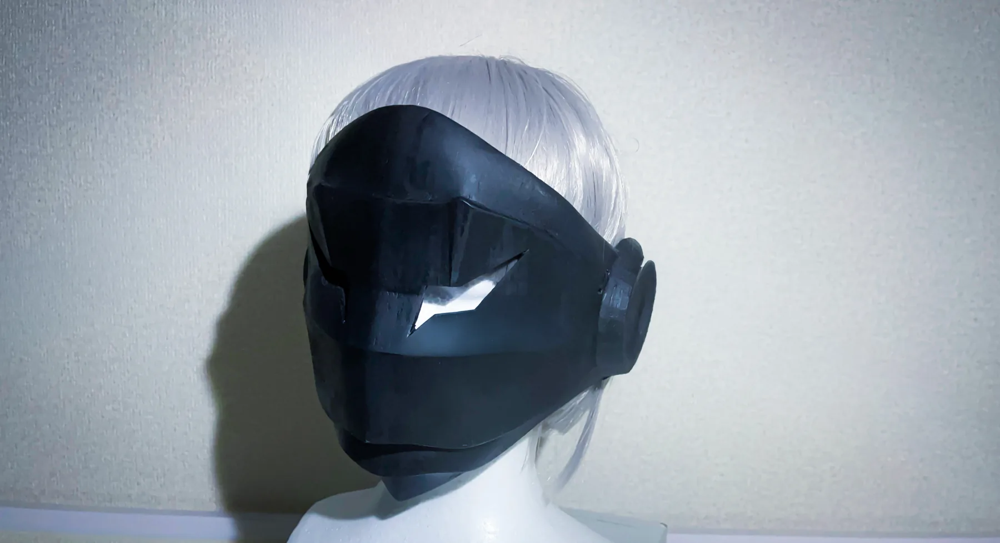
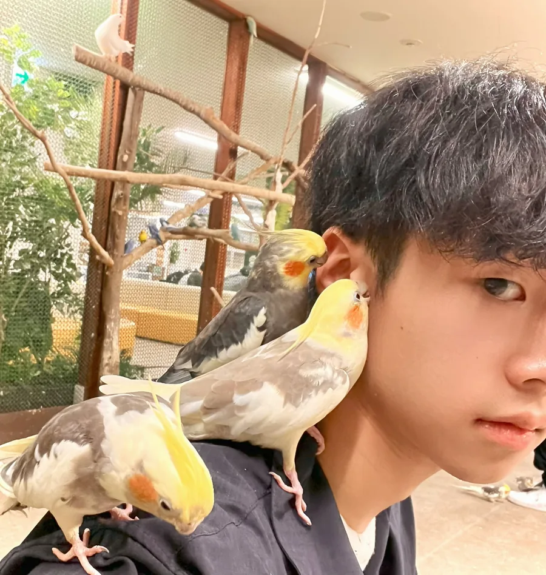
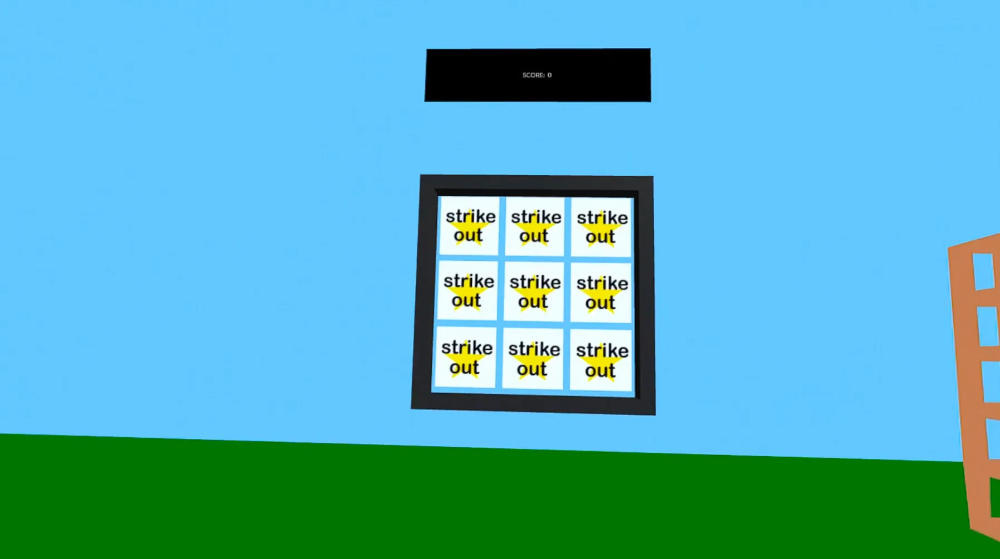
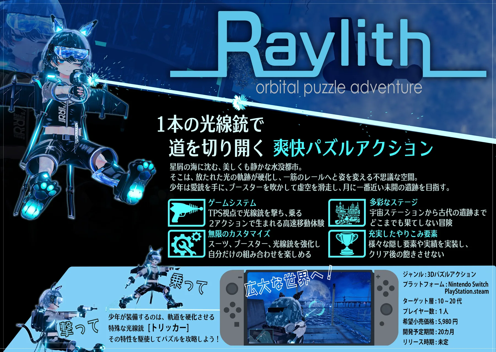

01 3D造形 / 2025
自分の顔から、
マスクをつくる。
顔の3Dスキャンを基準に、Blenderで形を調整。出力後は研磨とエアブラシで仕上げました。画面上のモデルが、身に着けられるものになるまで。
制作過程を見るHiten Kato / Portfolio
VRの手触りをつくること。身体に合うかたちを探すこと。誰かに届く一枚を仕上げること。技術と表現を行き来しながら、見た人が「そこにいる」と感じられるものをつくっています。

01 / Selected works
技術を試すだけで終わらせず、完成したときの見え方や使われ方まで考えた制作の記録です。

01 3D造形 / 2025
顔の3Dスキャンを基準に、Blenderで形を調整。出力後は研磨とエアブラシで仕上げました。画面上のモデルが、身に着けられるものになるまで。
制作過程を見る
02 VR / C++ / 2026
OpenXRとBullet Physicsを組み合わせたVRストラックアウト。手でボールをつかみ、放り、的に当てるまでの動きと物理挙動をC++で実装しました。
制作過程を見る
03 アバター / 撮影 / 2025–
アバターの素材感をUnityで整え、仮想カメラとPhotoshopで一枚の写真に仕上げる。3Dによる事前検証を地域の看板制作にも応用しました。
制作過程を見る
04 グラフィック / 2026
視線誘導、文字、余白、印刷時の見え方を考えたグラフィックとエディトリアルの実習。
詳しく見る
05 AR / チーム制作 / 2021–22
高校時代に発案し、2人のチームで開発した学校地図アプリ。三次元の表現に向かう原点です。
詳しく見る02 / About
興味の中心にあるのは、
人がどう感じるか。
中学生の頃、好きなアーティストのライブ演出を見て、技術が感覚に届く瞬間に惹かれました。高校では友人とARアプリを開発。大学ではアバター、VR、3D造形、グラフィックへと制作の場を広げています。
コードを書いて動きを確かめることも、画面の中の形を手で仕上げることも好きです。媒体を一つに決めず、表現に必要な方法を選んでいきたいと考えています。
03 / Practice
Unity、Blender、AR Foundation。アバターの質感調整やARの空間配置、3Dモデルの検証。
C++、Bullet Physics、OpenXR。VR内の物理挙動とインタラクションの実装。
Photoshop、Illustrator、InDesign。写真のレタッチ、紙面のレイアウト、印刷データの制作。
3Dプリンター、研磨、エアブラシ。データと実物を往復しながら行う造形と仕上げ。
04 / Contact
制作や活動については、GitHubからご覧いただけます。
GitHubを見る